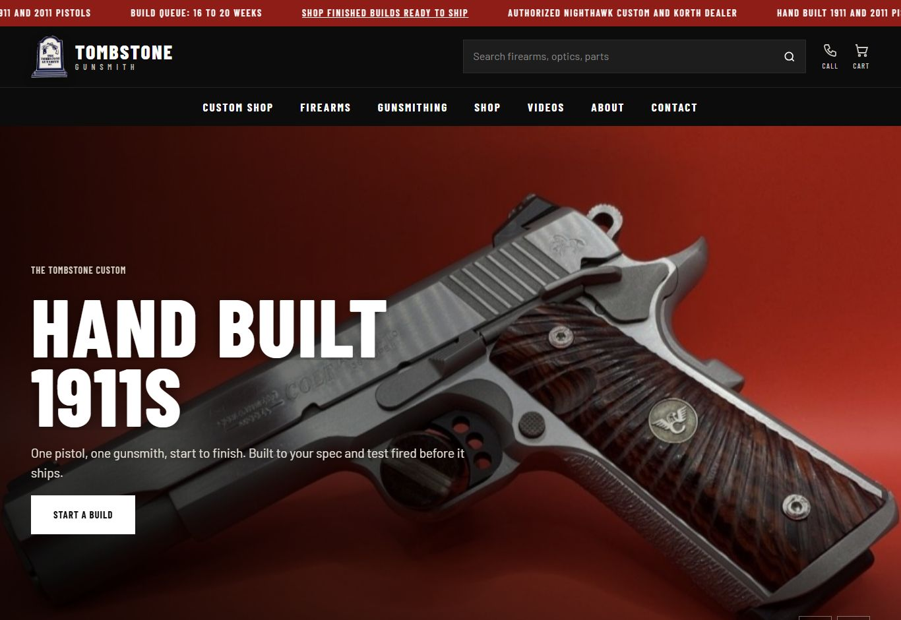
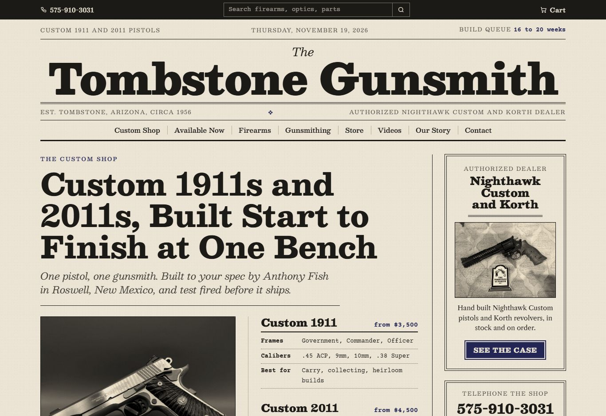

Two Designs for The Tombstone Gunsmith
Both versions are full sites with every page built. Click into either one and look around. The tab at the bottom left of every page flips to the same page in the other design.

The Current Design
Black with an oxblood red accent. A rotating photo slider up top, then category tiles, featured guns and the shop story. It follows the layout of the big premium gun stores.
Open Version A
The Epitaph
Set like the front page of the Tombstone Epitaph, the town paper since 1880. Newsprint, ink and the navy from the logo. The custom shop leads the front page, gun photos print in ink until you point at them, and the 1958 shop truck photo develops as you scroll to it.
Open Version BBoth designs use the same words, photos and prices, and both plug into the same AmmoReady store. Prices are placeholders until the real ones come in. Whichever design gets picked is the one that goes live.